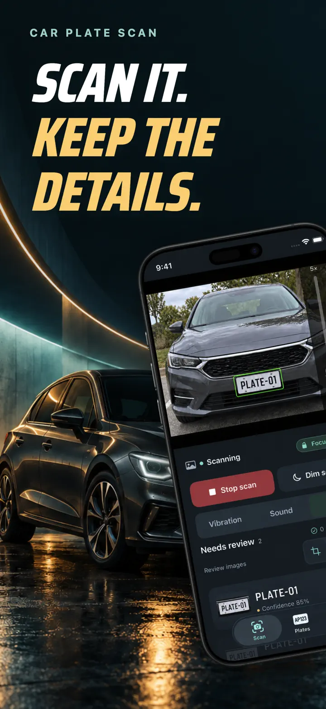
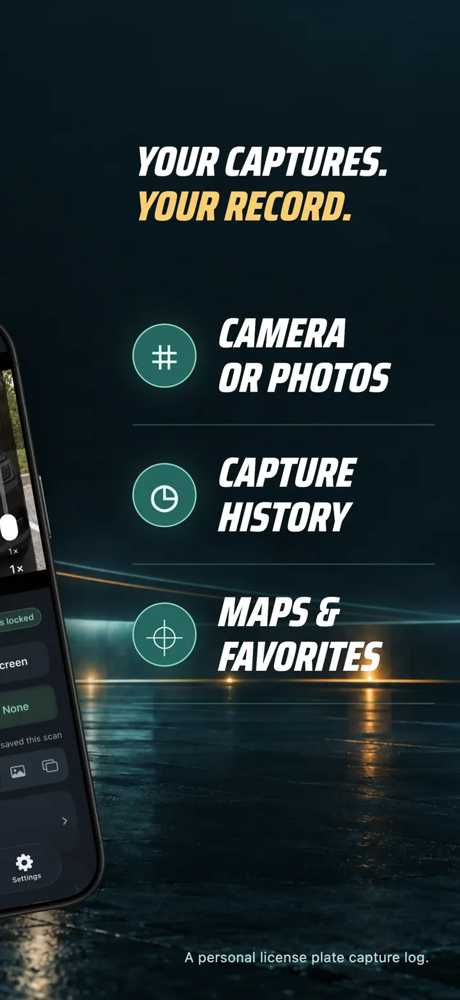
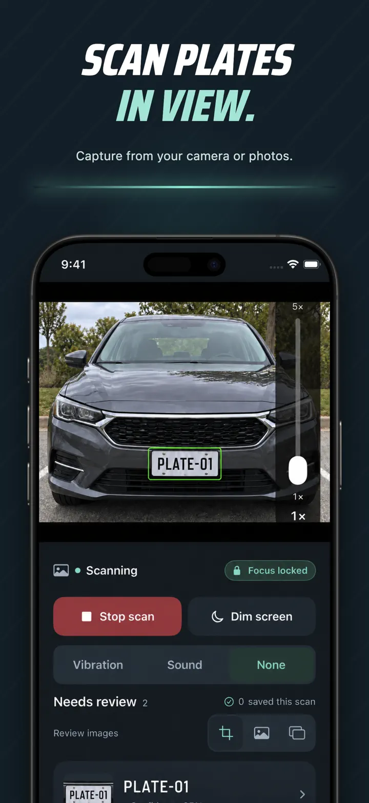
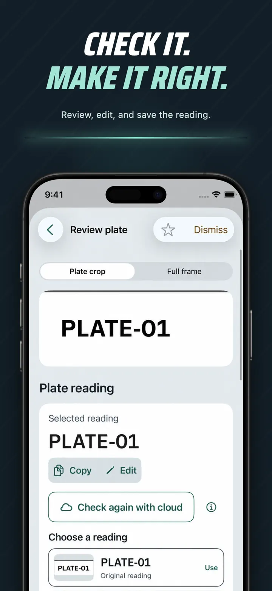
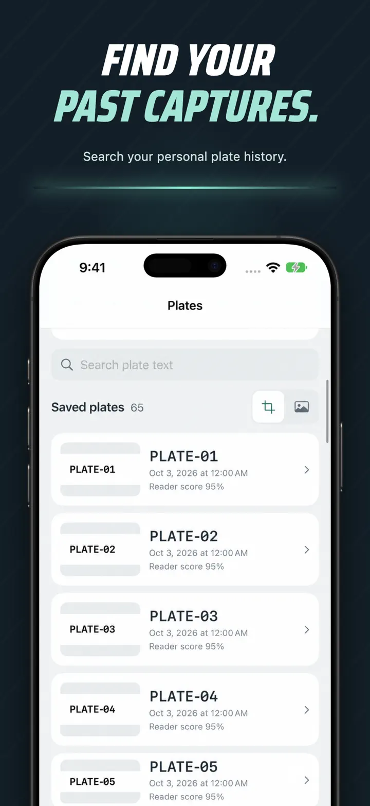
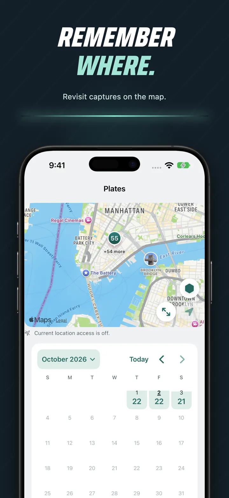
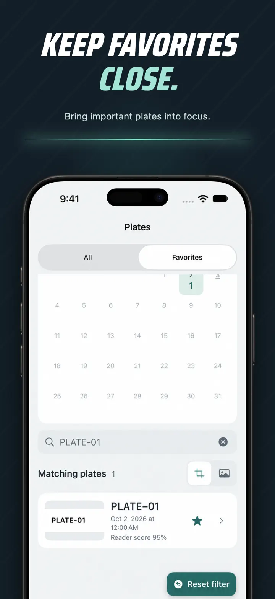

Car Plate Scan: License Reader
Photo OCR, History & Locations
Scan license plates from your camera or photos. Review readings, save capture details, and find past sightings with search, maps, and favorites.
Planned release: November 30, 2026
Explore screenshots
About the app
Turn license plates into a searchable personal capture history.
Car Plate Scan reads plates from your camera or a photo you choose. Review the result, correct it when needed, and keep the plate image with its date and available location.
SCAN AND REVIEW
- Scan with the live camera or choose a photo from your library.
- Review uncertain readings and correct plate text.
- Adjust automatic saving and repeat-capture settings.
KEEP THE DETAILS
- Save plate crops and full-frame images.
- View capture times and available locations.
- Revisit repeated sightings of the same plate.
FIND WHAT YOU SAVED
- Search your saved plates.
- Browse captures by date or on a map.
- Mark favorites for quick access.
Screenshots






Privacy & processing
Car Plate Scan records what you capture. It does not identify vehicle owners or provide VIN, registration, or vehicle-history reports.
Core plate reading runs on your device. Optional cloud review uses Apple Private Cloud Compute on supported devices and requires an internet connection. Availability depends on the operating system, device, and service limits.
Recognition may be incorrect; review results before relying on them. Plate formats and image conditions affect results. Do not operate the app while driving, and respect others’ privacy.
Car Plate Scan: License Reader
Scan license plates from your camera or photos. Review readings, save capture details, and find past sightings with search, maps, and favorites.
Planned release: November 30, 2026
Explore screenshots